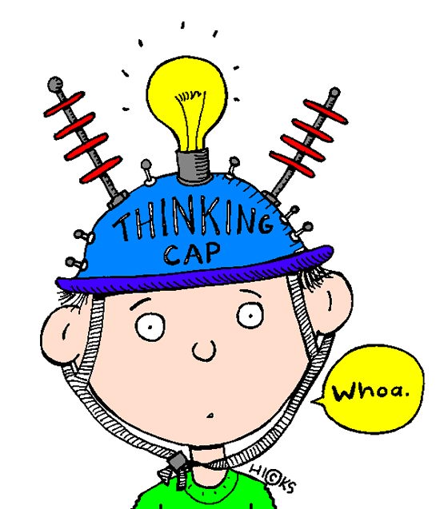

HOW DO I KNOW IF THIS SHOULD BE IN MY EXHHIBITION?
okay then
It sounds like you have a lot to think about and consider.
Thinking about the goal of an exhibition and what you hope to achieve can help
with forming the rest. Next to that these are things that could easily be discussed with affected groups
and ethical committees!
Take a look through our website and see what you need to consider still

English prepositions after the verb THINK – Запоріжжя English Club. (2020, December 10). Zapenglishclub.com. https://zapenglishclub.com/english-prepositions-after-the-verb-think/